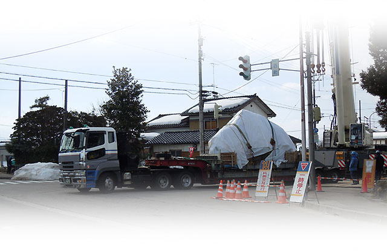
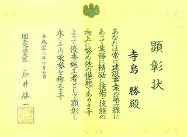
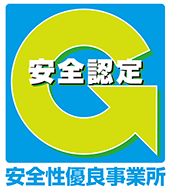
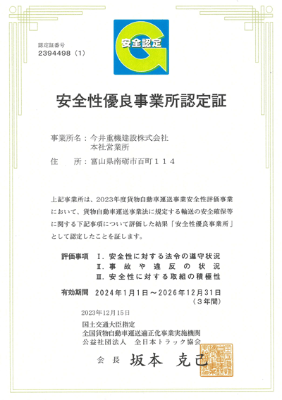

概要
| 社名 | 今井重機建設株式会社 |
|---|---|
| 設立 | 1968年 9月 30日 |
| 資本金 | 4,800万円 |
| 代表者名 | 代表取締役社長 ： 米澤 茂與 |
| 本社所在地 | 富山県南砺市百町114 |
| 事業内容 | 運送業（橋桁、鋼材、重量特殊物等） 建設業（橋梁架設工事、鉄骨建築、旧橋解体工事等） 建設機械・自動車リース及びレンタル |
| 従業員数 | 92名（2025.3末現在） |
| 建設業許可 | 番号 ： 富山県知事 許可（般-25）第2411号 土木工、とび・土工工事、鋼構造物、建、大工、左官、石、屋根、タイル・れんが・ブロック、鉄筋、板金、ガラス、塗装、防水、内装仕上、熱絶縁、建具、水道施設、解体工事業 |
| 輸送業許可 | 一般区域貨物運送業（名陸自貨二第875号）（栃運企第574号） 自動車運送取扱事業（名陸自貨一第381号）（関自貨１第1294号） 登録番号 ： 第8060号 産業廃棄物収集運搬業（富山県第01607073033号） |
| 主要取引銀行 | 北陸銀行、日本政策金融公庫 |
| 主要取引先 | 川田工業（株）、川田建設（株）、（株）橋梁メンテナンス、（株）横河ブリッジ、三井住友建設（株）、（株）日本ピーエス、佐藤工業（株）、佐藤鉄工（株）、中越鉄工（株）、北陸建工（株）、宮地エンジニアリング（株）、アール・タチバナ（株） |

有資格者・講習終了者数 (2025年4月日現在)
| 資格名称 | 人数 | |
|---|---|---|
| 免許 | 1級建築施工管理技士 | 1 |
| 1級土木施工管理技士 | 6 | |
| 2級土木施工管理技士 | 10 | |
| クレーン運転士 | 8 | |
| 移動式クレーン運転士 | 26 | |
| 運行管理者 | 11 | |
| 整備管理者 | 8 | |
| 鳶1級技能士 | 3 | |
| 大型自動車の運転・1種 | 63 | |
| 大型自動車の運転・2種 | 6 | |
| 大型特殊自動車 | 36 | |
| けん引き | 45 | |
| 2級建設機械施工技師 | 1 | |
| 2級ボイラー技士乙種 | 1 | |
| 危険物取扱者・甲種全類 | 1 | |
| 危険物取扱者・乙種第4類 | 6 | |
| 危険物取扱者・丙種 | 3 | |
| コンクリート技士 | 1 | |
| 衛生管理者1級 | 2 | |
| 労働安全コンサルタント（土木） | 1 | |
| 技能講習 | 地山の掘削作業主任者 | 2 |
| 土止め支保エ作業主任者 | 3 | |
| 型枠支保エの組立等作業主任者 | 13 | |
| 足場組立等作業主任者 | 21 | |
| はい作業主任者 | 9 | |
| 有機溶剤作業主任者 | 6 | |
| ガス溶接作業者 | 29 | |
| 鉛作業主任者 | 3 | |
| コンクリート造の工作物の解体等作業主任者 | 6 | |
| 建築物等の鉄骨の組立等作業主任者 | 19 | |
| 鋼橋架設等作業主任者 | 19 | |
| コンクリート橋架設等作業主任者 | 13 | |
| 玉掛け作業 | 89 | |
| 床上操作式クレーン運転 | 7 | |
| 小型移動式クレーン運転 | 36 | |
| 車両系建設機械（整地・運搬・積込用及び切削用）運転 | 22 | |
| 車両系建設機械（基礎工事用）運転 | 1 | |
| 車両系建設機械（解体用）運転 | 4 | |
| 不整地運搬車運転 | 2 | |
| 高所作業車運転 | 28 | |
| フォークリフト運転 | 50 | |
| 特別教育 | 軌道装置動力車の運転 | 10 |
| アーク溶接等の業務 | 26 | |
| 研削砥石の取替え・試運転業務 | 15 | |
| 低電圧の取り扱い | 21 | |
| クレーンの運転業務(5t未満） | 48 | |
| 動力駆動巻上げ機の運転 | 12 | |
| 建設用リフトの運転 | 1 | |
| ジャッキ吊上げ機械の調整・運転業務 | 11 | |
| 酸素欠乏危険作業 | 1 | |
| ローラー （締固め） | 2 | |
| 粉じん作業 | 1 | |
| 講習終了証 | 職長・安全衛生責任者教育 | 23 |
| 安全管理者選任時研修 | 1 | |
| 安全衛生推進者 | 3 | |
| 防火管理者甲種 | 1 | |
| 橋梁基幹技能士 | 3 | |
| PC基幹技能者 | 8 | |
| JR工事管理者 | 1 | |
| JR重機運転者 | 10 | |
| 溶融亜鉛めっき高カボルト接合 | 6 |
建設マスター受賞
当社の社員が優秀施工者（建設マスター）国土交通大臣顕彰を、再び、受賞しました。「建設マスター」は、最高峰の技術者です。
建設マスター（優秀施工者国土交通大臣顕彰者）は、建設産業に従事している現役の技能者の中で、第一線の現場作業に従事し、卓越した技能・技術を有している「ものづくりの名人」です。この顕彰は、建設人材の育成を目的に実施されており、後進の指導・育成等に多大な貢献をしている建設技能者に授与されます。

- 平成28年度受賞者（鳶エ）：寺島 勝
- 平成21年度受賞者（鳶エ）：山村 義秋
安全性優良事業所認定

Gマークとは：公益社団法人全日本トラック協会（全国貨物自動車運送適正化事業実施機関）による、貨物自動車運送事業安全性評価事業の一つで、交通安全対策に対するトラック運送事業者の各事業所単位での取り組みを評価し、定められた一定の基準をクリアした事業所を安全対策優良企業として認定するもので、このGマークを取得し、安全性の向上に取り組んでおります。Gマーク取得企業は安全性優良企業と評価された事業所であり、利用者がより安全性の高い事業者を選びやすくなるとともに、貨物自動車業界全体が安全性の向上に対する意識を高め、よりいっそう安全性に対する環境整備を図るためにあります。
【Gマークの特徴】
- 国土交通省が推進する「安全性優良事業所」の認定制度です。
- Gマーク認定事業所の事故割合は未取得事業所に比べて半分以下です。
- 安全性の高いトラック運送事業者を選ぶための目安です。
【安全性優良事業所 2023年12月15日認定】
